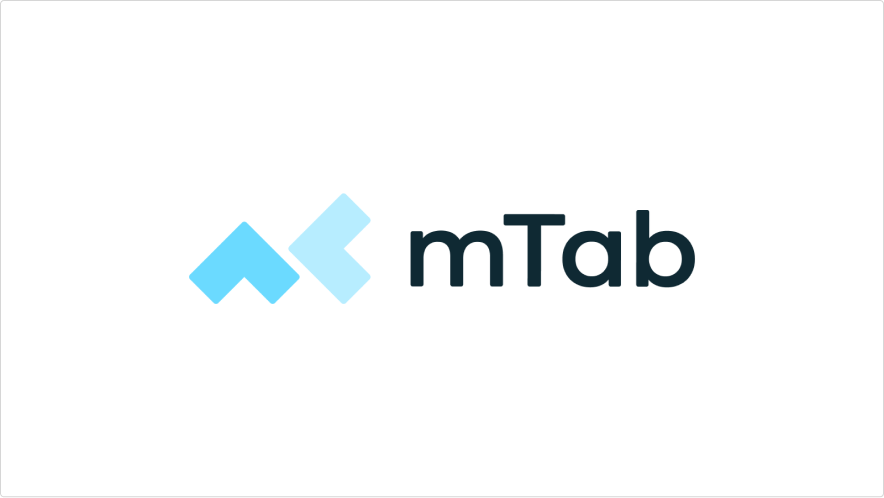
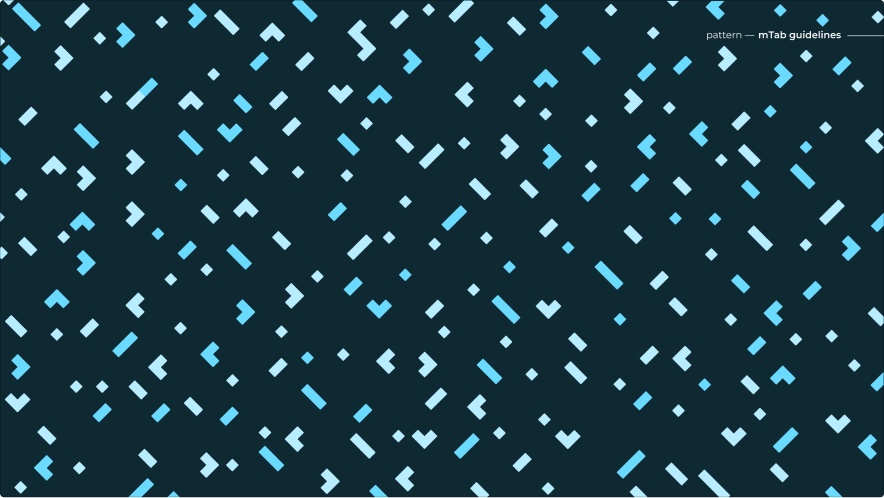
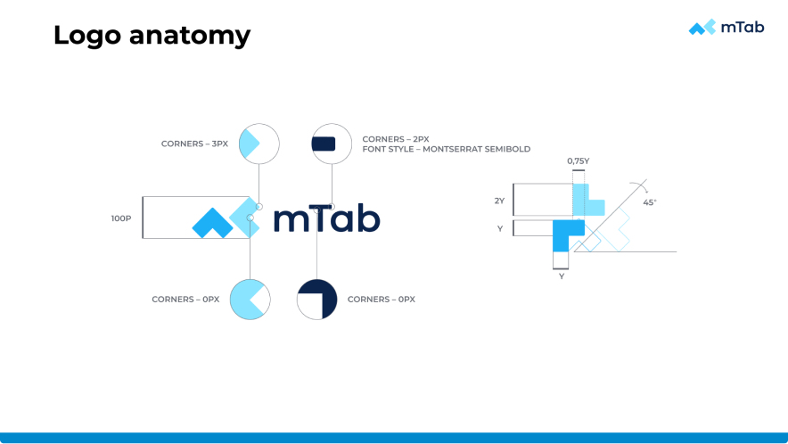
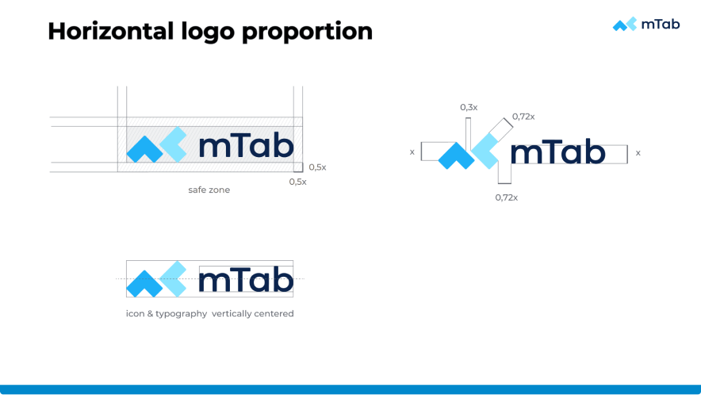
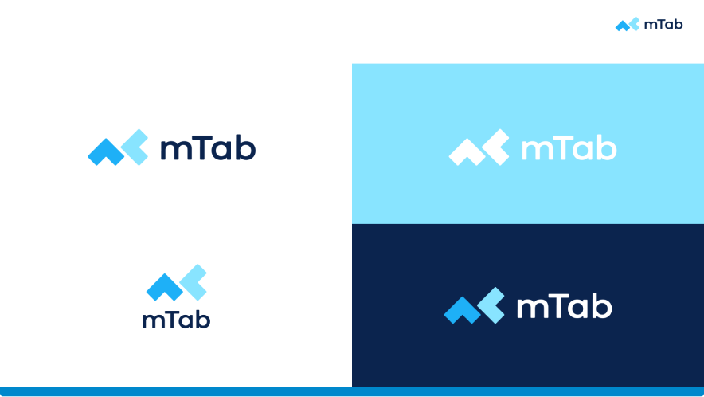
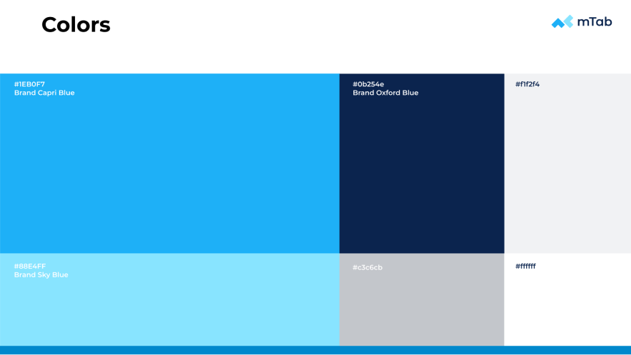
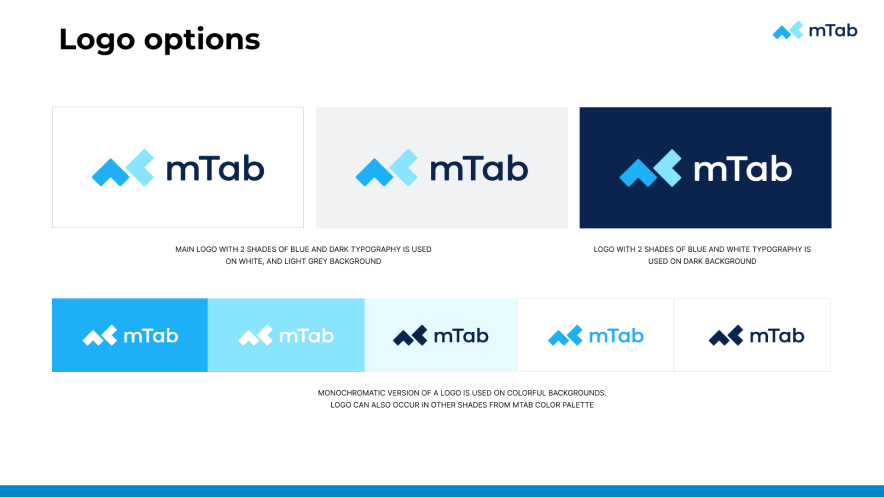
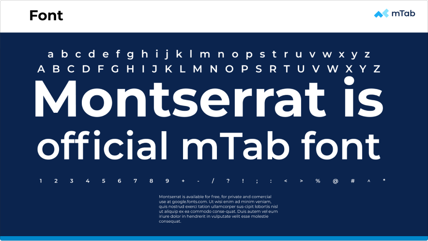

mTab branding
Building a new identity after the Slideworx acquisition

Overview
When mTab acquired Slideworx, the company was folded into mTab's structures and the Slideworx tools became mTab's main products. One of the first priorities was creating a new brand identity for the company. As Head of Design I ran the branding work. That meant workshops with stakeholders and the design team to settle on a direction, then seeing every asset through from the logo to the final deliverables.
Challenge
The company was starting something new, and the old Slideworx identity no longer said anything true about what the business had become or where it was going. We needed something fresh and professional: credible enough for enterprise clients, restrained enough to work across product UI, marketing, events and merchandise. It also had to happen fast, because everything else was waiting on it.
My role
I ran workshops with the team and key stakeholders to agree on the brand's personality, values and visual direction, and the identity came out of those sessions. The logo is deliberately minimal and reusable, with elements you can pull out and repeat as a pattern across promotional material and event branding.
The palette pairs a distinctive cyan blue with a dark teal and an orange accent, set in Montserrat. Beyond the logo I oversaw a full brand book covering anatomy, proportions, safe zones, colour variants and usage rules, plus the practical things you actually need day to day: presentation templates, stationery, module logos and favicons.
Outcome
The new branding gave mTab a single, professional identity from day one. It has held up well too, scaling from product interfaces and the website through to print, event signage and merchandise.






